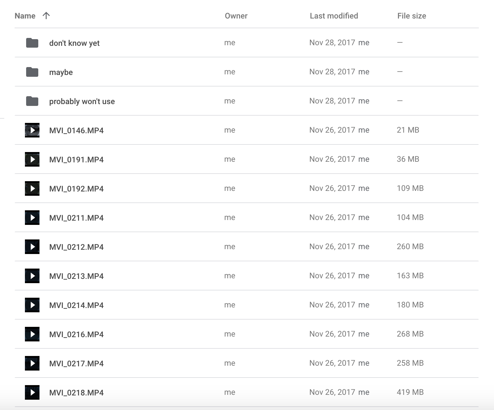

This short film was made for a final project in a Still and Moving Images class at NYU Tandon in the 2017 fall semester. I filmed everything using a Canon Rebel T6i and edited the video in Adobe Premiere.
For the final project, I wanted to do something similar to a squirrel video I did earlier in the semester. In that video, I filmed and made a story with animals instead of people. Since you can't direct wild animals like you can with people, you can't really go in with a set story in mind. However, our professor wanted all of us to have some kind of plan for what our story would be.
This time, I decided to film birds instead of squirrels. My rough idea for the story was to make it about a pigeon struggling to find its friend in the city, but knowing that I wouldn't be able to control the birds' actions, the story was subject to change. My plan was to go out to film and see what happened from there.
During the Thanksgiving break, I went to go film in Brooklyn, NY. My parents and my brother also came along to make sure everything was ok. I had originally planned on filming pigeons, but there were a lot of seagulls and pigeons where I went, so I ended up filming both of them, along with some ducks that were in the water.
I had no real direction of what I decided to film. I would start filming a random bird for an amount of time before moving on to a different one if that seemed more interesting or if the bird I was filming flew away. There was really not all that to it. I just filmed whichever birds that I wanted to. I also give credit to my brother for letting me know about interesting bird moments that were happening while I was filming something else.
Because I wasn't filming with a direction, I did end up worrying a little that I wouldn't have enough video to make a cohesive story, and so I tried to think of story ideas from what I was filming. At one point, I saw a pigeon get pecked at by another pigeon. Not long after, that same pigeon came over to where we were and started chasing after my mom before she shooed it away. After that, my brother and I felt that maybe this pigeon was a "bad pigeon," which made sense considering that a pigeon had pecked it earlier. And so, one potential story idea I had was about this "bad pigeon" that was hated by the other pigeons. At this point, I was trying to film that pigeon as much as possible just so I could have this story as a backup plan.
I started filming in the afternoon and stayed until the sun was starting to set. I ended up getting 97 different video clips with lengths ranging from 2 seconds to 3 minutes.
Once we got home, I uploaded all the videos from my camera onto Google Drive. I started looking through all of the videos I took to see if I could make a cohesive story out of any of them. Since there were so many clips to go through, I needed a way to organize them.
As I looked through the videos, I began to sort them into degrees of how likely I would use them. The categories I used were "maybe," "don't know yet," and "probably won't use."

The first wave of sorting was just about video quality and length just so I could get those out of the way first. If the footage was really bad or too short to show anything, I would put it in the "probably won't use" folder. If I felt that one of those videos could still maybe be used, I would put them in the "don't know yet" folder. I only sort out maybe 10 of the clips that way, but it did help in a way.
After that, it was just a process of determining which videos had content that could be used in a story. Because there were so many clips, I was kind of indecisive about where to sort most of the videos. A lot of them ended up in the "maybe" folder.
In trying to put together a story, I thought about the "bad pigeon" idea, but I was also open to other ideas. At one point, I thought about having the video be a mashup of different bird stories throughout the day since I had footage of pigeons, seagulls, and ducks. However, I decided not to do that because then you couldn't really focus on one story.
After rewatching many of the same clips over and over again, I eventually came upon the seagull story I used for the film. I can't remember exactly how it happened. I'm guessing that as I watched, I started to remember the basic idea of what videos I had available to me and made connections between some of the videos.
As I looked through the videos for ones that featured two seagulls, the story started building itself in a way. From the videos I had, I began to string together the narrative and write out the lines of dialogue. I almost couldn't believe that everything worked out so well, despite going into the filming without much of a plan. Even for the title card, I didn't plan to move the camera over to the right to make space for the title at all. It was a total accident when filming, but somehow it seems almost intentional in the completed short film. Out of the 97 video clips I took, I only ending up using 15 of them.
I edited everything from the video, the text, and the sound in Adobe Premiere.
I chose to have onscreen subtitles to show the dialogue between the seagulls. It was easier than having voice actors, and plus, having seagulls being voiced by humans in this story didn't seem to fit. I used different colors for the text in order to distinguish which seagull was talking. Black and white was used for the main seagull's thoughts. Pink was used for the main seagull, while blue was used for the main seagull's partner. Green and orange were used for the partner's friends.
More information to be added later...